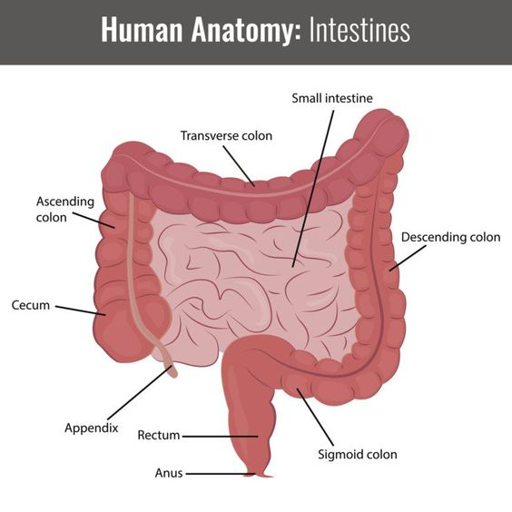

Its main purpose is to digest food. But the intestine is not only there for digestion: it also produces various substances
that carry messages to other parts of the body, and plays an important role in fighting germs and regulating the body's water balance.